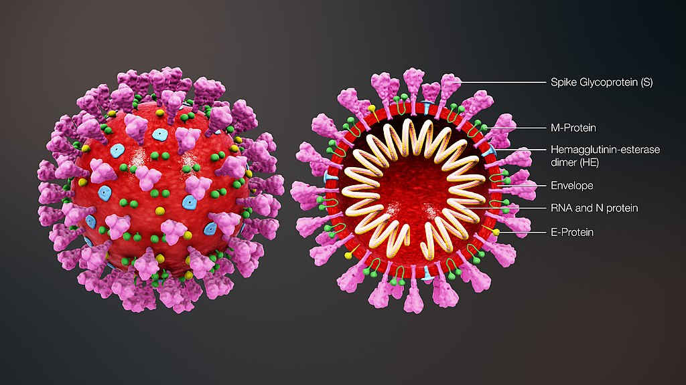

The name "Coronavirus" is derived from Latin corona, meaning "Crown" or"Wreath", itself a borrowing from Greek κορώνη korṓnē, "garland, wreath". The name was coined by June Almeida and David Tyrrell who first observed and studied human coronaviruses. The word was first used in print in 1968 by an informal group of virologists in the journal Nature to designate the new family of viruses. The name refers to the characteristic appearance of virions (the infective form of the virus) by electron microscopy, which have a fringe of large, bulbous surface projections creating an image reminiscent of the solar corona or halo. This morphology is created by the viral spike peplomers, which are proteins on the surface of the virus. The scientific name Coronavirus was accepted as a genus name by the International Committee for the Nomenclature of Viruses (later renamed International Committee on Taxonomy of Viruses) in 1971. As the number of new species increased, the genus was split into four genera, namely Alphacoronavirus, Betacoronavirus, Deltacoronavirus, and Gammacoronavirus in 2009. The common name coronavirus is used to refer to any member of the subfamily Orthocoronavirinae. As of 2020, 45 species are officially recognised.
The earliest reports of a coronavirus infection in animals occurred in the late 1920s, when an acute respiratory infection of domesticated chickens emerged in North America.Arthur Schalk and M.C. Hawn in 1931 made the first detailed report which described a new respiratory infection of chickens in North Dakota. The infection of new-born chicks was characterized by gasping and listlessness with high mortality rates of 40–90%. Leland David Bushnell and Carl Alfred Brandly isolated the virus that caused the infection in 1933. The virus was then known as infectious bronchitis virus (IBV). Charles D. Hudson and Fred Robert Beaudette cultivated the virus for the first time in 1937. The specimen came to be known as the Beaudette strain. In the late 1940s, two more animal coronaviruses, JHM that causes brain disease (murine encephalitis) and mouse hepatitis virus (MHV) that causes hepatitis in mice were discovered. It was not realized at the time that these three different viruses were related.
Human coronaviruses were discovered in the 1960s using two different methods in the United Kingdom and the United States. E.C. Kendall, Malcolm Bynoe, and David Tyrrell working at the Common Cold Unit of the British Medical Research Council collected a unique common cold virus designated B814 in 1961.The virus could not be cultivated using standard techniques which had successfully cultivated rhinoviruses, adenoviruses and other known common cold viruses. In 1965, Tyrrell and Bynoe successfully cultivated the novel virus by serially passing it through organ culture of human embryonic trachea. The new cultivating method was introduced to the lab by Bertil Hoorn. The isolated virus when intranasally inoculated into volunteers caused a cold and was inactivated by ether which indicated it had a lipid envelope. Dorothy Hamre and John Procknow at the University of Chicago isolated a novel cold from medical students in 1962. They isolated and grew the virus in kidney tissue culture, designating it 229E. The novel virus caused a cold in volunteers and, like B814, was inactivated by ether.
Scottish virologist June Almeida at St. Thomas Hospital in London, collaborating with Tyrrell, compared the structures of IBV, B814 and 229E in 1967. Using electron microscopy the three viruses were shown to be morphologically related by their general shape and distinctive club-like spikes. A research group at the National Institute of Health the same year was able to isolate another member of this new group of viruses using organ culture and named one of the samples OC43 (OC for organ culture). Like B814, 229E, and IBV, the novel cold virus OC43 had distinctive club-like spikes when observed with the electron microscope.

Coronaviruses are large, roughly spherical particles with unique surface projections.[44] Their size is highly variable with average diameters of 80 to 120 nm. Extreme sizes are known from 50 to 200 nm in diameter. The total molecular weight is on average 40,000 kDa. They are enclosed in an envelope embedded with a number of protein molecules. The lipid bilayer envelope, membrane proteins, and nucleocapsid protect the virus when it is outside the host cell.
The viral envelope is made up of a lipid bilayer in which the membrane (M), envelope (E) and spike (S) structural proteins are anchored. The ratio of E:S:M in the lipid bilayer is approximately 1:20:300. The E and M protein are the structural proteins that combined with the lipid bilayer to shape the viral envelope and maintain its size. S proteins are needed for interaction with the host cells. But human coronavirus NL63 is peculiar in that its M protein has the binding site for the host cell, and not its S protein. The diameter of the envelope is 85 nm. The envelope of the virus in electron micrographs appears as a distinct pair of electron-dense shells (shells that are relatively opaque to the electron beam used to scan the virus particle).
The M protein is the main structural protein of the envelope that provides the overall shape and is a type III membrane protein. It consists of 218 to 263 amino acid residues and forms a layer 7.8 nm thick. It has three domains, a short N-terminal ectodomain, a triple-spanning transmembrane domain, and a C-terminal endodomain. The C-terminal domain forms a matrix-like lattice that adds to the extra-thickness of the envelope. Different species can have either N- or O-linked glycans in their protein amino-terminal domain. The M protein is crucial during the assembly, budding, envelope formation, and pathogenesis stages of the virus lifecycle.
The E proteins are minor structural proteins and highly variable in different species. There are only about 20 copies of the E protein molecule in a coronavirus particle. They are 8.4 to 12 kDa in size and are composed of 76 to 109 amino acids. They are integral proteins (i.e. embedded in the lipid layer) and have two domains namely a transmembrane domain and an extramembrane C-terminal domain. They are almost fully α-helical, with a single α-helical transmembrane domain, and form pentameric (five-molecular) ion channels in the lipid bilayer. They are responsible for virion assembly, intracellular trafficking and morphogenesis (budding).
The spikes are the most distinguishing feature of coronaviruses and are responsible for the corona- or halo-like surface. On average a coronavirus particle has 74 surface spikes. Each spike is about 20 nm long and is composed of a trimer of the S protein. The S protein is in turn composed of an S1 and S2 subunit. The homotrimeric S protein is a class I fusion protein which mediates the receptor binding and membrane fusion between the virus and host cell. The S1 subunit forms the head of the spike and has the receptor-binding domain (RBD). The S2 subunit forms the stem which anchors the spike in the viral envelope and on protease activation enables fusion. The two subunits remain noncovalently linked as they are exposed on the viral surface until they attach to the host cell membrane. In a functionally active state, three S1 are attached to two S2 subunits. The subunit complex is split into individual subunits when the virus binds and fuses with the host cell under the action of proteases such as cathepsin family and transmembrane protease serine 2 (TMPRSS2) of the host cell.